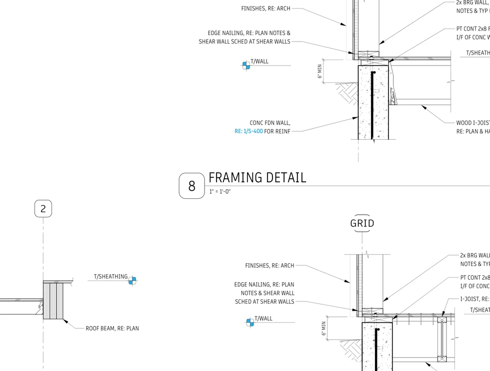
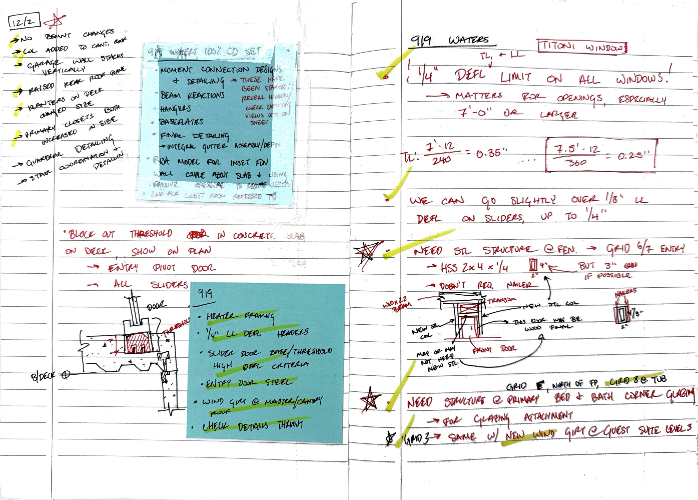
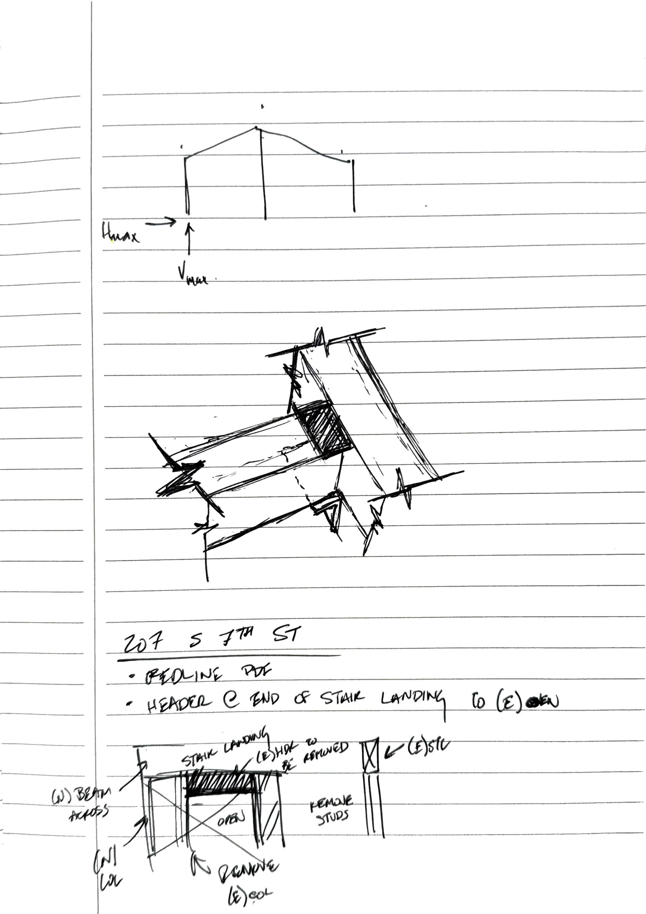
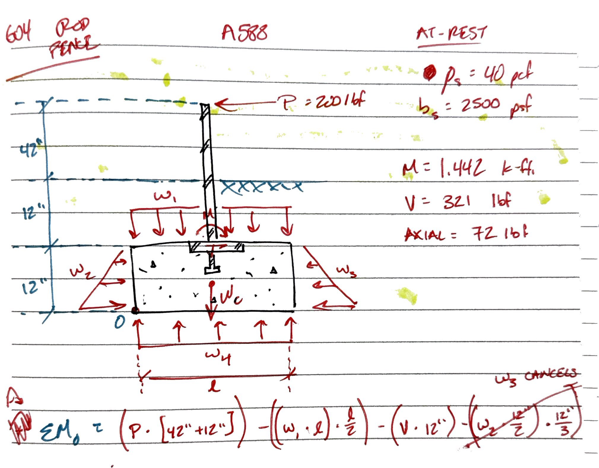

Model Coordination
3D views establish geometry, member relationships, and coordination questions before the story moves into details and calculations.


The V2 studio page is built like an architectural studio narrative: large imagery first, then a sequence of concise ideas about process, judgment, and communication.
3D views establish geometry, member relationships, and coordination questions before the story moves into details and calculations.

Selected redacted details show the engineering decisions without exposing private addresses or full drawing sets.

Process imagery gives clients a way to understand the reasoning behind the final drawing set and model views.
